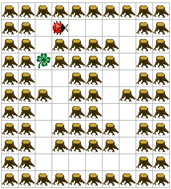

In Karas Welt gibt es Wälder mit Rundgängen, in denen Kara auf Kleeblättersuche geht. Jedes Feld in einem Rundgang hat genau zwei freie benachbarte Felder. Eines davon liegt hinter Kara, von diesem Feld aus ist auf das aktuelle Feld gekommen. Das heisst, genau hinter einem der drei Fragezeichen in der folgenden Abbildung ist ein leeres Feld, hinter den beiden anderen Fragezeichen liegen Felder mit Bäumen: